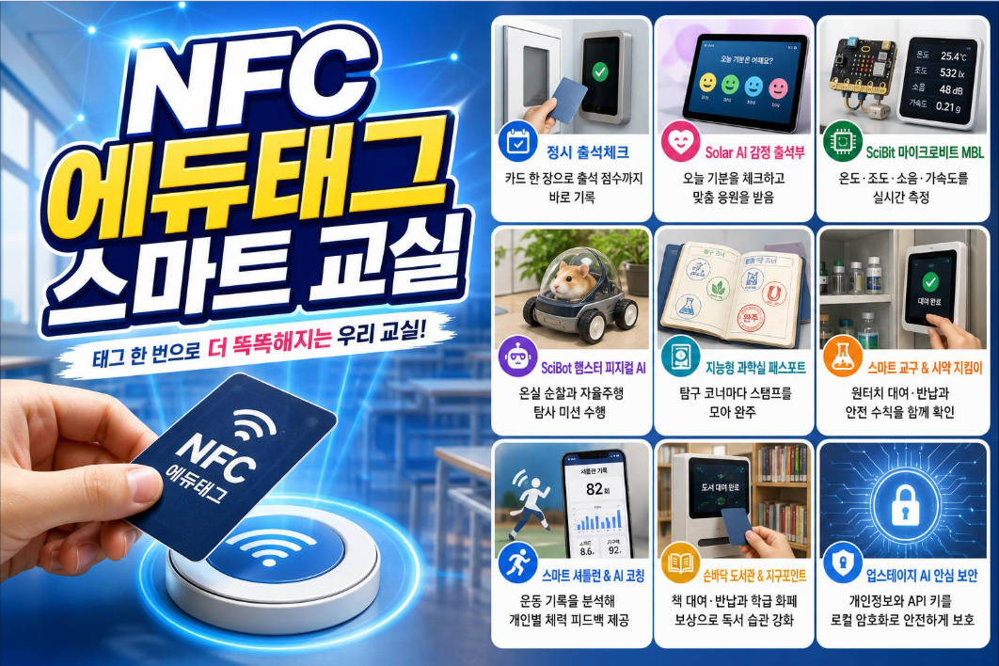

출석·감정·독서·운동부터 지능형 과학실 탐구까지 — AI가 함께하는 올인원 학급 플랫폼
카드 한 장으로 완성되는 스마트 학급 하루를 한눈에 살펴보세요!

정해진 마감시각 안에 출석하면 만점, 지각·결석은 0점입니다. 마감시각·만점은 ⚙ 설정·진단 탭에서 바꿀 수 있어요.
조회 기간의 감정 데이터를 AI가 분석해 반 분위기 요약과 교실 활동 아이디어를 제안해요.
아래 칸을 클릭하고 카드를 태그하면 카드번호가 자동 입력됩니다. 이름은 선택 사항입니다.
| 번호 | 이름 | 학년/반 | 카드 UID |
|---|
| 번호 | 이름 | 출석 시각 | 상태 | 점수 | 카드 UID |
|---|
포인트 적립·차감은 선생님만 할 수 있어요. 관리자 PIN을 입력하세요.
| 순위 | 이름 | 학년/반 | 포인트 |
|---|
아래 도서 목록에서 [AI 안내]를 누르면 그 책의 내용 소개와 읽기 포인트, 독후활동이 팝업으로 나타나요.
책에 붙인 NFC 카드를 태그하면 카드번호가 자동 입력됩니다. (대여 모드에서는 등록 칸에 입력되지 않으니, 이 탭에서 책 카드를 직접 태그하세요.)
| 제목 | 지은이 | 상태 | 카드 UID |
|---|
셔틀런 기록을 바탕으로 학생 개인 또는 우리 반 전체에게 긍정 피드백을 만들어줘요.
스테이션 카드를 태그하면 카드번호가 자동 입력됩니다.
| 종목 | 카드 UID |
|---|
학생 카드를 태그한 뒤 탐구 스테이션 카드를 대면 스탬프가 자동으로 찍힙니다.
MBL 센서, 디지털 현미경 등 고가 교구를 NFC로 간편하게 대여/반납하고 안전 수칙(MSDS)을 확인합니다.
| 교구/시약명 | 분류 | 보관 위치 | 현재 상태 | 안전 수칙 |
|---|
마이크로비트(micro:bit) v2의 내장 센서(온도, 조도, 소리, 가속도) 및 MBL 확장 센서 데이터를 수집하여 학생 패스포트에 기록합니다.
햄스터S/햄스터 로봇의 근접/바닥 센서와 피지컬 AI를 활용한 자율주행 과학실 탐사 미션 및 임무를 관리합니다.
라인트레이서로 화분을 순찰하며 조도와 토양 수분을 자동 탐사합니다.
근접 센서와 자율주행 알고리즘으로 장애물을 피해 샘플을 수거합니다.
우리 동네 실외 공공데이터(기상청·에어코리아)와 과학실 실내 MBL 센서 측정값을 비교 탐구합니다.
| 스테이션명 | 영역/구역 | 탐구 미션 | 카드 UID |
|---|
초기화하면 이 카드의 등록(학생·도서·스테이션)이 지워져 다른 용도로 다시 등록할 수 있습니다. 과거 출석·대여·체육 기록은 통계 보존을 위해 남습니다.
모든 데이터(학생·출석·점수·감정·포인트·도서·체육)를 하나의 백업 파일(.db)로 내려받습니다.
초기화하기 전에 먼저 백업해 두면 안전합니다. 복원은 이 파일을 데이터 폴더의 attendance.db로 덮어쓰면 됩니다.
필요한 자료만 골라 엑셀로 저장합니다.
되돌릴 수 없습니다. 초기화 전에 위에서 전체 백업을 먼저 받으세요. 아래 "기록 초기화"는 학생·도서·스테이션·교구 등록 정보는 유지하고 활동 기록만 지웁니다.
마감시각 이전(포함)에 카드를 태그하면 만점, 이후면 지각(0점)으로 기록됩니다.
카드를 대면 번호를 키보드처럼 입력하는 리더기(HID/키보드-웨지)를 쓸 때 켜세요. 입력칸 바깥에서 숫자가 입력되고 Enter로 끝나면 출석으로 처리합니다. (시리얼 CR-100과 함께 사용 가능)
출석을 구글 시트에 자동으로 올려 어디서든 보고 공유합니다. 완전 오프라인으로 쓰려면 꺼두면 되고, 켜져 있을 때만 동작합니다.
tools/google-apps-script.gs 내용을 붙여넣고 저장.공휴일 자동 반영(주간 점수 정확도)과 미세먼지·날씨(체육 야외활동 판단)를 켭니다. 꺼두면 외부 통신 없이 동작합니다.
공휴일·미세먼지·날씨에 각각 다른 키를 쓰려면 아래에 개별로 입력하세요. (비우면 위 공통 키를 사용)
오늘 급식 식단·알레르기를 실시간 출석 화면에 표시하고, 학사일정(휴업일·방학)을 주간 점수의 결석 계산에서 자동 제외합니다.
PIN을 설정하면 포인트 적립·차감은 PIN을 아는 교사만 할 수 있습니다. (학생은 자기 포인트 확인·AI 피드백만 가능) PIN도 서버에 암호문으로 저장됩니다.
감정출석부·책 안내·지구 살리기 포인트·운동 기록에 대한 AI 피드백을 만들어줍니다. API 키는 서버의 데이터 폴더에 AES-256 암호문으로만 저장되며 화면·git에 노출되지 않습니다.
확인 중...
카드를 태그해도 반응이 없으면, 아래에서 리더기(CR-100 / Silicon Labs CP210x) 포트를 직접 선택하세요. 자동 탐지가 잘못된 포트(예: 블루투스)에 연결됐을 때 유용합니다.
리더기에 카드를 태그해 보세요. 아래에 데이터가 나타나면 연결·통신이 정상입니다. 연결됐다고 표시되는데도 카드를 태그할 때 아무것도 안 나오면, 위에서 다른 포트를 선택해 보세요.
문제 진단이 필요할 때만 사용하세요. 일반 사용 시에는 꺼두는 것을 권장합니다.